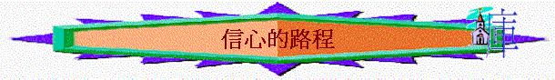

經文:來12:1-4
引言
∼12:1提及許多的見證人，在聖經中/生活中，有沒有一些信心的人物是你所欣賞及學習的？
∼來11提及很多信心的見證人，他們至死仍未得所應許，卻存心忍耐走信心的路，他們又如何激勵今天的信徒呢？我們當效法他們怎樣跑前面的路？
一.除去攔阻(來12:1)
1.12:1上半節提及我們當怎樣跑？
2.12:1提到重擔，我們想起亞伯拉罕，他昔日要離開吾珥，踏上應許之地，他要放下甚麼重擔？
3.今日信徒走天路時，又有甚麼重擔令我們走得不好？今日你又有沒有呢？
4.除了放下重擔外，12:1我們又要脫去甚麼？12:1怎形容罪？你同意嗎？
5.來11:25提及摩西走上神的路時，他要脫去甚麼？
6.你初信主時，有沒有脫去罪的經歷？試分享
二.存心忍耐(來12:1)
1.12:1又提及我們存甚麼心態走那前面的路程？
2.為何要存這樣的心？沒有了會怎樣？
3.來11:35-38提及甚麼事情？他們有甚麼相同遭遇？在這些苦楚中，你認為最難忍受是那一項苦楚？
4.有甚麼動力令他們可以存心忍耐這些苦楚？
5.試分享，在你信仰路上，學習忍耐的經歷？
三.仰望基督(來12:2-4)
1.12:3、5題到甚麼相同字眼？
2.有甚麼事情可以令信主的人灰心？
3.12:3-4又暗示甚麼事可以令信徒灰心？
4.12:2-3提及不灰心的秘訣在於甚麼？是否仰望自己/仰望環境？
5.12:2上半節提及主有甚麼特性？試解釋「信心創始成終的耶穌」？
6.為何仰望主，可以不灰心？
7.12:3提及「忍受罪人這樣頂撞的」指誰？12:2提及他為何可以忍受？
8.主如何面對十字架的苦難？你認為「輕看羞辱」易不易？為甚麼？主為何可以面對？「擺在前面的喜樂」是甚麼意思？
9.有沒有經歷過仰望主、思想主而令你有忍受及不灰心的經歷？
總結：我們應如何走信心的路程？你在今次查經中又學到甚麼功課？
祈禱